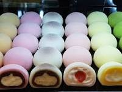

El mochi japonés es un tipo de pastel de arroz elaborado con una harina fina de arroz glutinoso.
De manera tradicional, estos pastelitos se elaboraban en las casas para la celebración de diferentes eventos,
como el año nuevo, el nacimiento de un hijo o una ceremonia de compromiso.

cómo hacer mochis
ingredientes:
160 g harina de arroz
225 ml de agua
1 cucharada azúcar o edulcorante
almidón de patata o maizena (para espolvorear)
Preparacion:
Comienza mezclando bien la harina y el azúcar en un bol grande. Remueve hasta que estén bien integrados ambos ingredientes.
Ve añadiendo poco a poco el agua mientras remueves la masa. Tiene que quedar bien húmeda, mezclando de manera homogénea con las manos.
Tapa la mezcla con papel film, y calienta en el microondas durante 2 minutos a potencia elevada. La mezcla ira cogiendo un poco de textura mientras se calienta.
Sácalo del microondas y sigue removiendo bien, amasando enérgicamente. Notaras que la masa se vuelve cada vez mas dura y elástica.
Vuelve a cubrir el bol con papel film transparente y mete en el microondas otros dos minutos. Saca y amasa de nuevo, repitiendo el proceso hasta que veas que la superficie de la masa se torna brillante. Este es el punto exacto que debemos lograr para que la masa este lo suficientemente elástica.
Usa un mortero, poniendo la masa en el para machacarlo poco a poco. Añade un poco de almidón de patata para evitar que la masa se pegue, haciendo la masa mas suave. Usa el mazo del mortero para machacar, hasta que la masa este suave y bien integrada.
Sigue trabajando la masa con las manos, dándole vueltas y amasándola hasta lograr una textura de mochi perfecta. Si lo deseas, puedes añadir colorante a la masa, mezclando bien para que el color quede homogéneo.
Divide la masa en 12 o 13 partes del mismo tamaño, haciendo bolitas y aplanándolas para poner el relleno en el centro. Añade tu ingrediente favorito, y cierra la masa haciendo una bola perfecta.
Trabaja la masa sobre una superficie espolvoreada con almidón de patata o maizena, de manera que el exterior quede cubierto por una fina cada de este ingrediente al terminar de hacer las bolitas.